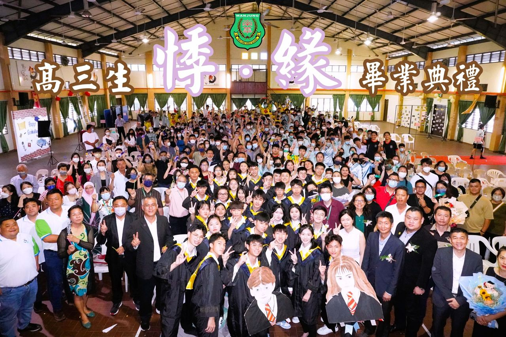
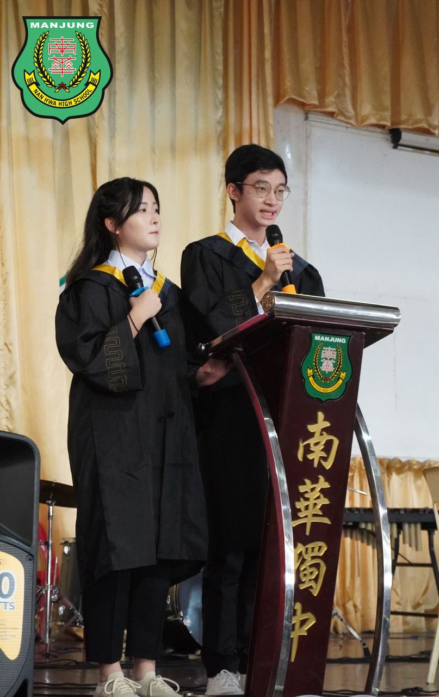
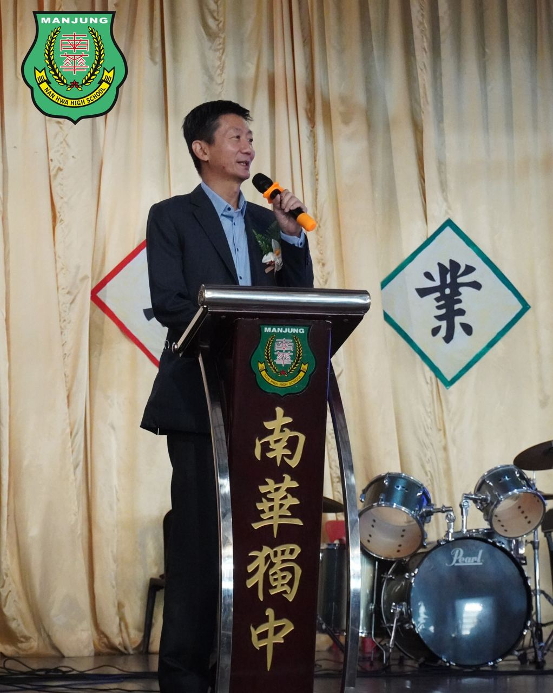
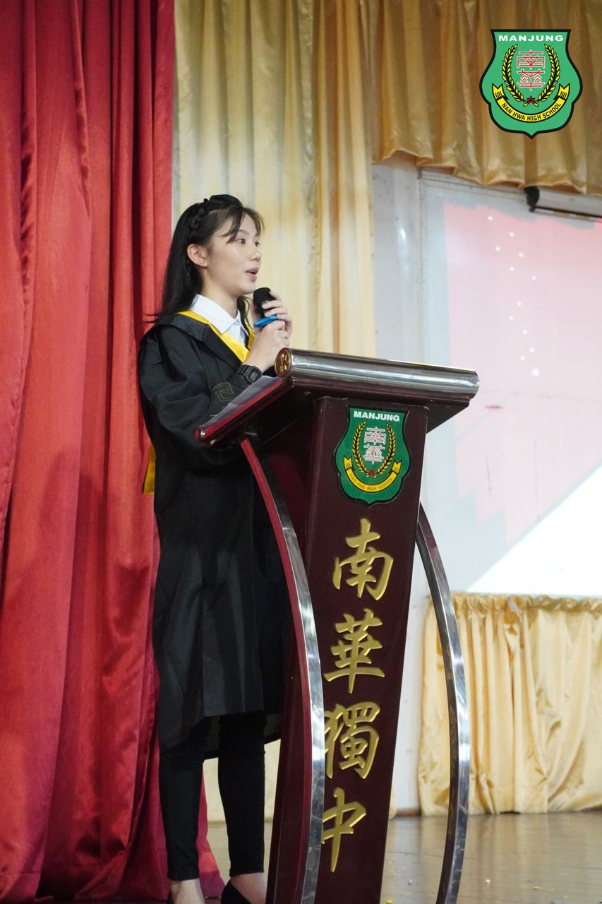
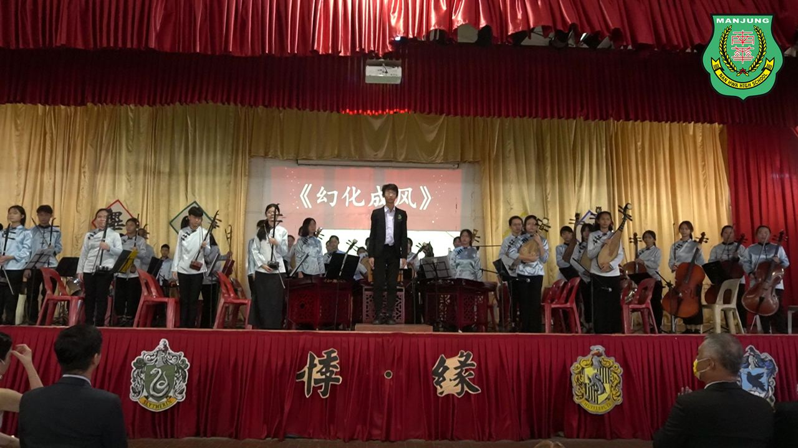
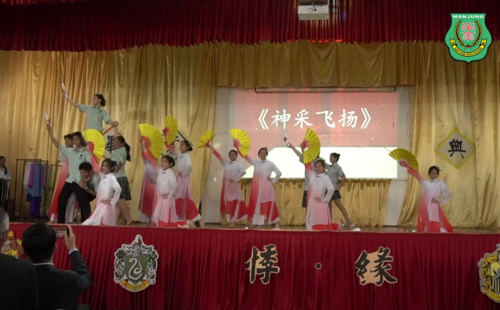
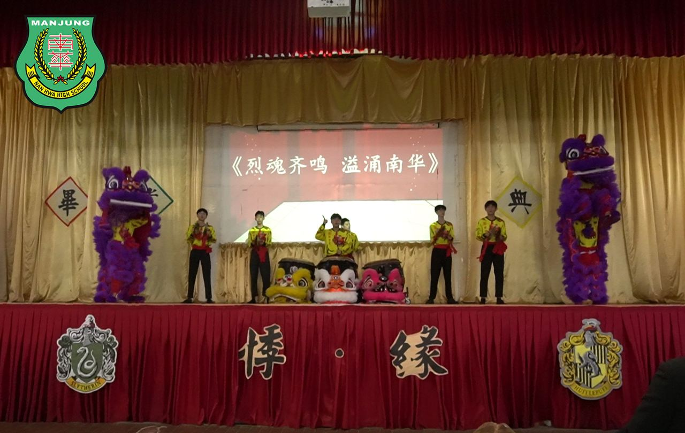
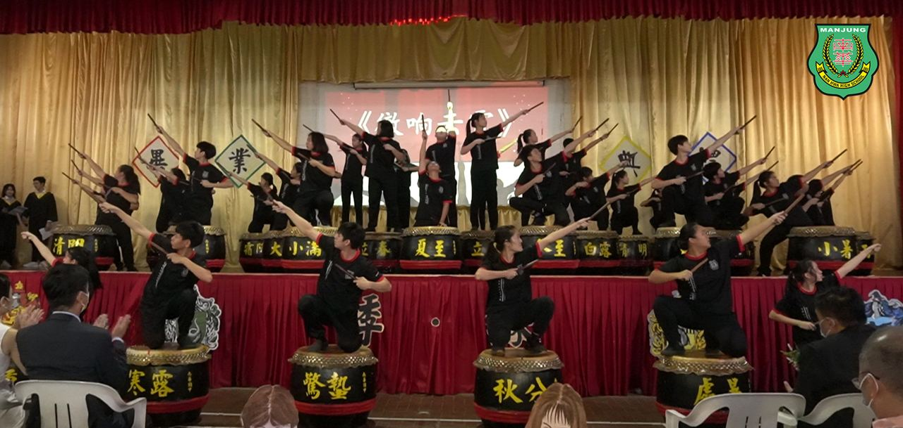

高中第48届 暨
高中第48届 暨
初中第51届毕业典礼 "悸·缘"
南华独中于日前举办高中第48届暨初中第51届毕业典礼，主题为“悸·缘”，意味着“感谢母校恩情，珍惜缘分带来的悸动”。毕业生在全体董事会、师生、家长联谊会、校友会及家长的见证下唱奏骊歌、领过毕业证书、告别母校，场面温馨感人。
南华独中董事长颜登逸先生在致辞中表示，学校办学方针“学会读书·学会做人”不仅适用于求学阶段，对于即将踏入社会的高三毕业生仍旧管用。颜董事长强调“我们的前辈即使在教育并不普及的年代，依然懂得坚守做人的道理；如今高三生受过完善的教育后，更要学会做人，懂得感恩”。颜董事长更是以“厚德载物”来勉励高三毕业生，不管未来是升学或是就业，都要成为才德兼备的领袖人才，“迎”领新世代创造新时代。
校长陈丽冰博士在致辞中坦然，为高三毕业生感到既高兴又感伤，“高兴的是你们都已经长大成人，即将奔赴新前程；感伤的是校园里将缺少你们矫健的身影、灿烂的笑容、还有郎朗的读书声”，然而即使有万般不舍，陈校长毅然决然地祝福高三毕业生不要放弃继续学习、继续深造，以期下次相逢时便是瑰丽的相逢，因为学生的成才便是一校之长最光荣的时刻。
家长联谊会主席游美玉女士则是以“人生如树”激励高三毕业生，因为不管将树苗安栽在何处，哪怕是在高高的山崖上，他们都会努力地向上生长，成为栋梁之材。游主席也提醒高三毕业生遇到困难与挫折时，不忘母校，因为师长们依然是校友们坚强的后盾。
#毕业典礼 #悸缘
#南华独中 #曼绒 #实兆远







